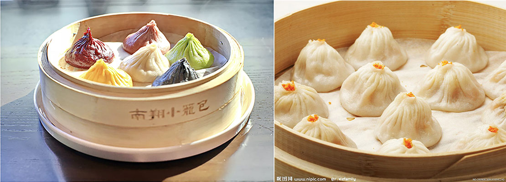

Under the guise of an international metropolis and being able to taste food from all over the world, you can also experience food with Chinese characteristics and special snacks in Shanghai.
2nd Floor, No. 6, Chengzhong Street, Jiading District, Shanghai
Nanxiang Xiaolong's handicrafts were born in the tenth year of Tongzhi in the Qing Dynasty (1871). Since the filling is a secret recipe, the craftsmanship is always passed down between masters and apprentices. Chef uses refined white flour to roll the skin into thin skin. The filling is made of high-quality pork. First, boil the meat in chicken broth, then freeze and stir to keep it fresh. When filling, sprinkle a small amount of sesame paste to get the flavor. Depending on the season, add crab meal or shrimp to the filling. In the production process, the closed part of each Xiaolongbao needs to be folded 14 times, which requires a high level of technology. At the same time, the meat filling is faintly visible in the thin dough. After the dumplings are steamed in a pot, the meat's soup is wrapped in the dough, which is the most indispensable part.
3rd Floor, Hongyi International Plaza, 299 Nanjing East Road, Huangpu District (near Henan Middle Road), Shanghai


The invention of rib rice cake reflects the old Shanghainese's love for ribs. "XIAN DE LAI (meaning very delicious)" This shop has been around for nearly 50 years. When it opened a stall in an alley on the north side of Guangming Middle School, the owner might never have thought that the "brain hole" combination of tonkatsu and four rice cakes would become one of the classic delicacies representing Shanghai. In retrospect, this is simply a genius invention:
199 Nanjing East Road 2F, Shanghai EDITION, near Henan Middle Road, Shanghai


In addition to local specialty snacks, the night view by the Huangpu River is also not to be missed. The Bund is located on the banks of the Huangpu River in Huangpu District, Shanghai. It is one of the most prosperous areas in Shanghai during the day and the best place to enjoy the beautiful night view at night.
Therefore, this restaurant located on the edge of the Bund, where you can enjoy the food while admiring the night view, has become the first choice for tourists. Of course, the fusion of dishes is the most important thing. Canton is full of interest in the fusion of tastes. It combines Sichuan cuisine's passion with the exquisite traditional Cantonese cuisine, just like a disco that blends Sichuan and Guangdong on the tip of the tongue.
Here are some personal favorites: rose soy sauce chicken, gourd flower, shrimp wonton.